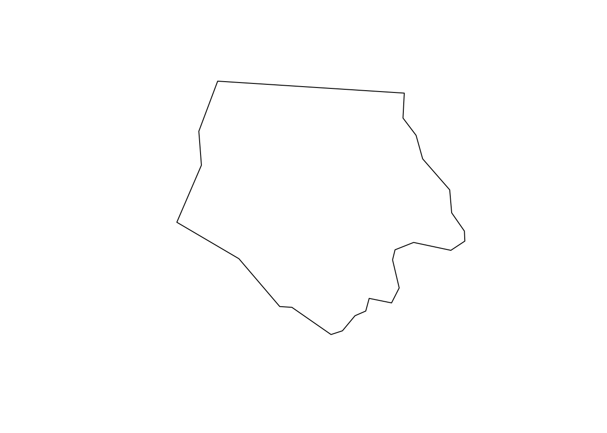
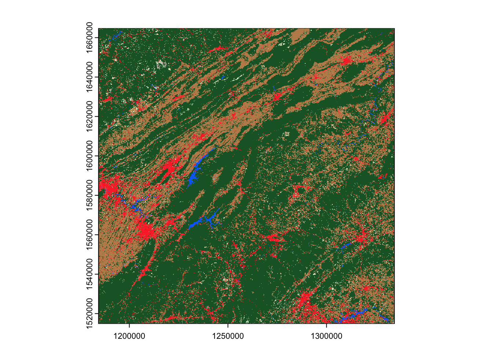
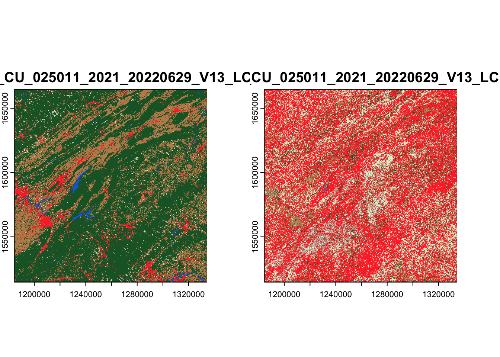

install.packages("sf")
install.packages("rstac")
install.packages("terra")Download data from a STAC API using R and rstac
This tutorial walks through querying a STAC API using the rstac R package, and downloading data from the API using rstac or GDAL (via sf). This tutorial will assume that you’re already familiar with the R language and the terra package.
As all of the packages we’ll be using are available from CRAN, you can install them (if necessary) using install.packages():
STAC APIs are servers that provide access to a set of data which users can query and retrieve. You can find a partial list of STAC APIs at STAC Index, https://stacindex.org/. For this tutorial, we’ll be downloading data from Microsoft’s Planetary Computer, which currently provides more than 100 data sets for free via a central STAC API.
To start downloading data, we’ll first need to let rstac know what STAC API we want to query and download from. To do so, we’ll pass the URL of the Planetary Computer STAC API to the rstac::stac() function:
stac_source <- rstac::stac(
"https://planetarycomputer.microsoft.com/api/stac/v1"
)
stac_source###RSTACQuery
- url: https://planetarycomputer.microsoft.com/api/stac/v1
- params:
- field(s): version, base_url, endpoint, params, verb, encodeAs you can see, the output of stac() is an RSTACQuery object, which contains information about an HTTP query that we might want to run in the future. Under the hood, these objects are normal lists containing information about the query:
str(stac_source)List of 6
$ version : NULL
$ base_url: chr "https://planetarycomputer.microsoft.com/api/stac/v1"
$ endpoint: NULL
$ params : list()
$ verb : chr "GET"
$ encode : NULL
- attr(*, "class")= chr [1:2] "stac" "RSTACQuery"But most of the time, you won’t need to worry about this internal representation; rstac provides many helper functions to access the elements of this list if needed.
It’s worth highlighting that this object is a representation of a future HTTP query, not the results of a query we’ve already run! In order to actually run these queries, we need to use rstac::get_request() (or rstac::post_request(), depending on what HTTP verb your STAC API is expecting). If we use get_request() to query the Planetary Computer STAC API, we get a brief description of what this API provides:
rstac::get_request(stac_source)###STACCatalog
- id: microsoft-pc
- description:
Searchable spatiotemporal metadata describing Earth science datasets hosted by the Microsoft Planetary Computer
- field(s): type, id, title, description, stac_version, conformsTo, linksBecause the RSTACQuery object is a representation of a future query, we can use other functions in rstac to change our query parameters and fields before we actually make a request. For instance, we can use rstac::collections() to update our request to query the /collections endpoint of the Planetary Computer API, which lists all the available collections (which, to quote the STAC Collection specification, “describe a group of Items that share properties and metadata”):
collections_query <- stac_source |>
rstac::collections()
collections_query###RSTACQuery
- url: https://planetarycomputer.microsoft.com/api/stac/v1
- params:
- field(s): version, base_url, endpoint, params, verb, encodeWhile it might not look like much has changed, under the hood our collections_query object has a new collections class to indicate that we’re querying the collections endpoint, not the top-level STAC endpoint:
class(stac_source)[1] "stac" "RSTACQuery"class(collections_query)[1] "collections" "RSTACQuery" And as a result, when we use get_request() to turn this query specification into a query result, we get a list of the collections available from this API:
available_collections <- rstac::get_request(collections_query)
available_collections###STACCollectionList
- collections (122 item(s)):
- daymet-annual-pr
- daymet-daily-hi
- 3dep-seamless
- 3dep-lidar-dsm
- fia
- sentinel-1-rtc
- gridmet
- daymet-annual-na
- daymet-monthly-na
- daymet-annual-hi
- ... with 112 more collection(s).
- field(s): collections, linksThese collections are a subset of the data sets available in the Planetary Computer data catalog; the Planetary Computer is organized so that each collection corresponds to a distinct data set in the catalog.
For our purposes today, we’re going to be querying the USGS Land Change Monitoring, Assessment, and Projection (LCMAP) collection, which provides (among other things) annual land cover classifications for the continental United States. We can query what items are available for this collection using the rstac::stac_search() function. We’ll limit our search to 2021 using the datetime argument, and only search within the LCMAP collection by using the collection’s ID of usgs-lcmap-conus-v13:
rstac::stac_search(
q = stac_source,
collections = "usgs-lcmap-conus-v13",
datetime = "2021-01-01/2021-12-31"
) |>
rstac::get_request()###STACItemCollection
- features (250 item(s)):
- LCMAP_CU_032003_2021_V13_CCDC
- LCMAP_CU_031006_2021_V13_CCDC
- LCMAP_CU_031004_2021_V13_CCDC
- LCMAP_CU_031003_2021_V13_CCDC
- LCMAP_CU_031002_2021_V13_CCDC
- LCMAP_CU_030007_2021_V13_CCDC
- LCMAP_CU_030006_2021_V13_CCDC
- LCMAP_CU_030005_2021_V13_CCDC
- LCMAP_CU_030004_2021_V13_CCDC
- LCMAP_CU_030003_2021_V13_CCDC
- ... with 240 more feature(s).
- assets:
browse, dates, lcachg, lcachg_metadata, lcpconf, lcpconf_metadata, lcpri, lcpri_metadata, lcsconf, lcsconf_metadata, lcsec, lcsec_metadata, rendered_preview, sclast, sclast_metadata, scmag, scmag_metadata, scmqa, scmqa_metadata, scstab, scstab_metadata, sctime, sctime_metadata, tilejson
- item's fields:
assets, bbox, collection, geometry, id, links, properties, stac_extensions, stac_version, typeWe can see that there are 250 items inside this catalog for 2021. Collectively, these items contain all LCMAP data for the continental United States for 2021, with each item containing a number of assets covering a relatively small chunk of the nation. These assets are “object[s] that [contain] a URI to data associated with the Item that can be downloaded or streamed”, to quote the spec; here, assets are things like “primary land cover classification” or “a metadata object”.
To keep things simple, we’ll start off downloading data for a relatively small region, namely North Carolina’s Ashe County. We’ll use data included in the sf package to get the county’s geometry:
ashe <- sf::read_sf(system.file("shape/nc.shp", package = "sf"))[1, ]
sf::st_geometry(ashe) |> plot()
To filter our query down to just tiles intersecting this region, we’ll need to provide the bounding box of the county in WGS84 as a query parameter. We can use sf::st_transform() to reproject the county and sf::st_bbox() to find our bounding box:
ashe_bbox <- ashe |>
sf::st_transform(4326) |>
sf::st_bbox()
ashe_bbox xmin ymin xmax ymax
-81.74091 36.23448 -81.23970 36.58977 We can then pass this bounding box directly to the bbox argument of stac_search to filter our results down further:
stac_query <- rstac::stac_search(
q = stac_source,
collections = "usgs-lcmap-conus-v13",
bbox = ashe_bbox,
datetime = "2021-01-01/2021-12-31"
)
executed_stac_query <- rstac::get_request(stac_query)
executed_stac_query###STACItemCollection
- features (1 item(s)):
- LCMAP_CU_025011_2021_V13_CCDC
- assets:
browse, dates, lcachg, lcachg_metadata, lcpconf, lcpconf_metadata, lcpri, lcpri_metadata, lcsconf, lcsconf_metadata, lcsec, lcsec_metadata, rendered_preview, sclast, sclast_metadata, scmag, scmag_metadata, scmqa, scmqa_metadata, scstab, scstab_metadata, sctime, sctime_metadata, tilejson
- item's fields:
assets, bbox, collection, geometry, id, links, properties, stac_extensions, stac_version, typeAs luck would have it, Ashe County is entirely contained in a single LCMAP tile.
There are a few different ways to download the assets associated with this item. First, we could use the rstac::assets_download() function. Before we can download assets, however, we’re going to need to authenticate ourselves with Planetary Computer. Note that this doesn’t require an account or registration, but rather is a way for Microsoft to uniquely identify your Planetary Computer session and impose rate limits if needed.
This authentication process is built-in to rstac, using the items_sign() and sign_planetary_computer() functions:
signed_stac_query <- rstac::items_sign(
executed_stac_query,
rstac::sign_planetary_computer()
)
signed_stac_query###STACItemCollection
- features (1 item(s)):
- LCMAP_CU_025011_2021_V13_CCDC
- assets:
browse, dates, lcachg, lcachg_metadata, lcpconf, lcpconf_metadata, lcpri, lcpri_metadata, lcsconf, lcsconf_metadata, lcsec, lcsec_metadata, rendered_preview, sclast, sclast_metadata, scmag, scmag_metadata, scmqa, scmqa_metadata, scstab, scstab_metadata, sctime, sctime_metadata, tilejson
- item's fields:
assets, bbox, collection, geometry, id, links, properties, stac_extensions, stac_version, typeWe didn’t need to log in or register anywhere, but now have authenticated our requests and will be able to download assets from this STAC API.
We’ll then use this signed query object with assets_download() to actually retrieve our assets. We’ll provide the name of what assets we want to download – let’s start off by downloading lcpri, which contains the primary land cover classifications for this area:
rstac::assets_download(signed_stac_query, "lcpri", output_dir = tempdir())We’re downloading these into a temporary directory (using tempdir()) so that these example files will be cleaned up after we finish running this tutorial. In practice, you’ll likely want to set output_dir somewhere else, where the data will persist for as long as you need.
The assets_download() function will save your data in a sub-directory of output_dir that corresponds to the URL that the asset is being downloaded from. In this case, that winds up being quite a long folder path – but once we type the folder path out, we can load our downloaded raster into R and use it with terra and other raster packages as normal:
output_file <- file.path(
tempdir(),
"lcmap",
"CU",
"V13",
"025011",
"2021",
"LCMAP_CU_025011_2021_20220721_V13_CCDC",
"LCMAP_CU_025011_2021_20220629_V13_LCPRI.tif"
) |>
terra::rast()
terra::plot(output_file)
The assets_download() function is an easy and straightforward way to download assets associated with a STAC Item, and by passing multiple asset names (or leaving the asset_names argument NULL) we could use this function to download more than one asset at a time. This function can also handle any format an asset is stored in, making it a flexible way to download rasters, metadata, vectors, or whatever other data is provided by a STAC API.
The main downside of this approach, however, is that we can’t use it to download only specific parts of an asset, which means we can wind up downloading much more data than we need. For instance, look at how far our land cover raster extends beyond Ashe County’s borders:
terra::plot(output_file)
ashe |>
sf::st_transform(sf::st_crs(output_file)) |>
sf::st_geometry() |>
plot(add = TRUE, lwd = 3)An alternative approach for downloading raster assets is to use GDAL’s virtual file system interface to download rasters. If the STAC server stores the asset in a cloud-friendly format, such as COG, then GDAL is able to download only the necessary pieces of the raster, potentially speeding up download times and reducing bandwidth usage.
To download assets using GDAL, we need to extract the URL for our assets from our unsigned STAC query results. We can get the URL for the lcpri asset using rstac::assets_url():
lcpri_url <- rstac::assets_url(executed_stac_query, "lcpri")
lcpri_url[1] "https://landcoverdata.blob.core.windows.net/lcmap/CU/V13/025011/2021/LCMAP_CU_025011_2021_20220721_V13_CCDC/LCMAP_CU_025011_2021_20220629_V13_LCPRI.tif"In order for this URL to work with GDAL’s virtual filesystem interface, we’ll need to append a few things in front of the URL. Namely, we’ll need to add:
/vsicurl, to specify that we want to use the http-based virtual filesytem interface,pc_url_signing=yes, to use GDAL’s built-in method for signing requests to Microsoft’s Planetary Computer,- and
pc_collection=usgs-lcmap-conus-v13, to let GDAL know what collection we need authentication for.
All of these configuration parameters are documented in the official GDAL documentation.
We can write a small function that will paste these parameters on to any URL we want:
make_vsicurl_url <- function(base_url) {
paste0(
"/vsicurl",
"?pc_url_signing=yes",
"&pc_collection=usgs-lcmap-conus-v13",
"&url=",
base_url
)
}We might have chosen to make this function a bit more flexible by adding a collection argument, so that we can sign requests for data in any collection we’d want. For our purposes here, however, this simpler function should suffice.
We can then use this function to modify our LCMAP URL:
lcpri_url <- make_vsicurl_url(lcpri_url)Next, we’ll download the lcpri asset from this URL using sf::gdal_utils(), which provides access to GDAL’s C++ utilities. We’ll use the included interface to gdalwarp to both download and reproject our data, using the t_srs and te arguments to gdalwarp to control the spatial reference system and the extent of our downloaded raster:
out_file <- tempfile(fileext = ".tif")
sf::gdal_utils(
"warp",
source = lcpri_url,
destination = out_file,
options = c(
"-t_srs", sf::st_crs(ashe)$wkt,
"-te", sf::st_bbox(ashe)
)
)This download runs a good bit faster than using assets_download(), and results in a smaller raster covering only our area of interest, reprojected into the same CRS as our original data:
terra::rast(out_file) |>
terra::plot()
ashe |>
sf::st_geometry() |>
plot(lwd = 3, add = TRUE)At this point, we’ve walked through how to use rstac to query a STAC API, and how to use either rstac or GDAL to download assets found in these queries. It’s worth highlighting that so far we’ve only needed to write about 40 lines of code; here’s everything we’ve walked through so far, presented as a single script instead of in a bunch of chunks:
ashe <- sf::read_sf(system.file("shape/nc.shp", package = "sf"))[1, ]
ashe_bbox <- ashe |>
sf::st_transform(4326) |>
sf::st_bbox()
stac_query <- rstac::stac(
"https://planetarycomputer.microsoft.com/api/stac/v1"
) |>
rstac::stac_search(
collections = "usgs-lcmap-conus-v13",
bbox = ashe_bbox,
datetime = "2021-01-01/2021-12-31"
) |>
rstac::get_request()
make_vsicurl_url <- function(base_url) {
paste0(
"/vsicurl",
"?pc_url_signing=yes",
"&pc_collection=usgs-lcmap-conus-v13",
"&url=",
base_url
)
}
lcpri_url <- make_vsicurl_url(rstac::assets_url(stac_query, "lcpri"))
out_file <- tempfile(fileext = ".tif")
sf::gdal_utils(
"warp",
source = lcpri_url,
destination = out_file,
options = c(
"-t_srs", sf::st_crs(ashe)$wkt,
"-te", sf::st_bbox(ashe)
)
)
terra::rast(out_file) |>
terra::plot()
ashe |>
sf::st_geometry() |>
plot(lwd = 3, add = TRUE)What if we wanted to download more than one raster asset? We could choose to pass multiple asset names to assets_download(). For instance, if we wanted to also download the secondary land cover classification for this area (called lcsec), we could write:
rstac::assets_download(
signed_stac_query,
c("lcpri", "lcsec"),
output_dir = tempdir(),
overwrite = TRUE
)Note that we needed to set overwrite = TRUE, in order to re-download the lcpri asset that we had already retrieved.
These rasters are now somewhere in our output_dir directory. We can find their file paths using list.files() in order to load and visualize them:
list.files(
file.path(tempdir(), "lcmap"),
recursive = TRUE,
full.names = TRUE
) |>
terra::rast() |>
terra::plot()
If we wanted to download multiple assets using sf and GDAL, we’d need to run our gdal_utils() call for each asset we wanted to download. For instance, to download both lcpri and lcsec, we could run:
vapply(
make_vsicurl_url(rstac::assets_url(stac_query, c("lcpri", "lcsec"))),
function(asset_url) {
out_file <- tempfile(fileext = ".tif")
sf::gdal_utils(
"warp",
source = asset_url,
destination = out_file,
options = c(
"-t_srs", sf::st_crs(ashe)$wkt,
"-te", sf::st_bbox(ashe)
)
)
out_file
},
character(1)
) |>
terra::rast() |>
terra::plot()
What if we wanted to download the same asset from more than one item? For instance, what if we wanted to download lcpri for all of North Carolina?
We could construct our STAC query in almost exactly the same way as before, except using the entire nc data frame instead of just its first row:
nc <- sf::read_sf(system.file("shape/nc.shp", package = "sf"))
nc_bbox <- nc |>
sf::st_transform(4326) |>
sf::st_bbox()
stac_query <- rstac::stac(
"https://planetarycomputer.microsoft.com/api/stac/v1"
) |>
rstac::stac_search(
collections = "usgs-lcmap-conus-v13",
bbox = nc_bbox,
datetime = "2021-01-01/2021-12-31"
) |>
rstac::get_request()
signed_query <- stac_query |>
rstac::items_sign(
rstac::sign_planetary_computer()
)
signed_query###STACItemCollection
- features (20 item(s)):
- LCMAP_CU_029012_2021_V13_CCDC
- LCMAP_CU_029011_2021_V13_CCDC
- LCMAP_CU_028013_2021_V13_CCDC
- LCMAP_CU_028012_2021_V13_CCDC
- LCMAP_CU_028011_2021_V13_CCDC
- LCMAP_CU_028010_2021_V13_CCDC
- LCMAP_CU_027013_2021_V13_CCDC
- LCMAP_CU_027012_2021_V13_CCDC
- LCMAP_CU_027011_2021_V13_CCDC
- LCMAP_CU_027010_2021_V13_CCDC
- ... with 10 more feature(s).
- assets:
browse, dates, lcachg, lcachg_metadata, lcpconf, lcpconf_metadata, lcpri, lcpri_metadata, lcsconf, lcsconf_metadata, lcsec, lcsec_metadata, rendered_preview, sclast, sclast_metadata, scmag, scmag_metadata, scmqa, scmqa_metadata, scstab, scstab_metadata, sctime, sctime_metadata, tilejson
- item's fields:
assets, bbox, collection, geometry, id, links, properties, stac_extensions, stac_version, typeAs you can see, we now have 20 items to download, rather than just 1!
We barely need to change our code at all to download all 20 lcpri assets from these items using assets_download(). We’re simply going to set progress = FALSE, in order to keep the output from this function clean. Other than that, we don’t need to change a thing:
rstac::assets_download(
signed_query,
"lcpri",
output_dir = tempdir(),
overwrite = TRUE,
progress = FALSE
)These files are each saved into their own folder inside of output_dir. We can use list.files() to get the paths to each of them, and then terra::sprc() and terra::mosaic() to combine them into a single raster:
lcpri <- list.files(
file.path(tempdir(), "lcmap"),
pattern = "LCPRI.tif",
recursive = TRUE,
full.names = TRUE
) |>
lapply(terra::rast) |>
terra::sprc() |>
terra::mosaic()
terra::plot(lcpri)
nc |>
sf::st_transform(sf::st_crs(lcpri)) |>
sf::st_geometry() |>
plot(lwd = 3, add = TRUE)
Note that we’ve lost our color palette due to mosaic(), but this is the same data as we’ve been working with throughout the entire tutorial.
Or alternatively, we can use our gdal_utils() call – without any edits – to download and merge these files together. Remember that we’re using our unsigned query results here!
out_file <- tempfile(fileext = ".tif")
sf::gdal_utils(
"warp",
source = make_vsicurl_url(rstac::assets_url(stac_query, "lcpri")),
destination = out_file,
options = c(
"-t_srs", sf::st_crs(nc)$wkt,
"-te", sf::st_bbox(nc)
)
)
terra::rast(out_file) |>
terra::plot()
nc |>
sf::st_geometry() |>
plot(lwd = 3, add = TRUE)Note that gdalwarp does not interpolate between overlapping pixels, and instead simply uses the value from whichever pixel it processed last. That’s fine here, where our tiles shouldn’t overlap (and pixel values should be identical if they do), but means you shouldn’t use gdalwarp to combine images from multiple time periods into a single composite.
It’s worth highlighting that these are just two methods among many for downloading this data – you may also find using packages such as terra or gdalcubes useful for getting data from STAC APIs!